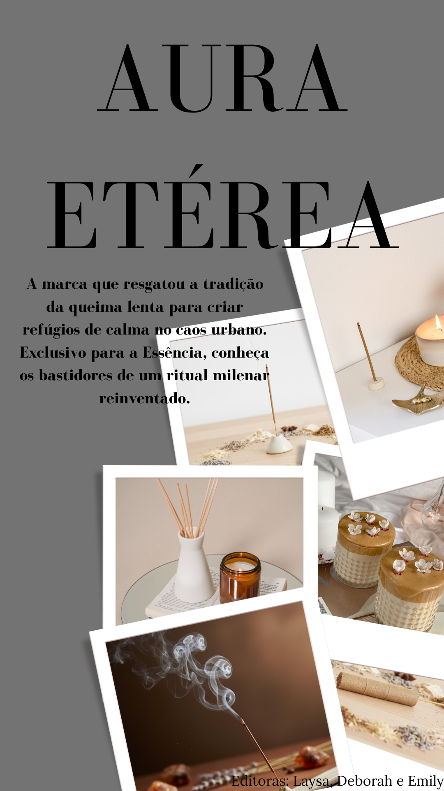

Editorial: A Pausa Necessária
O incenso, do latim que significa "queimar", é um dos mais antigos rituais humanos. De sua origem no Egito - onde era uma oferenda aos Faraós - à Índia, onde guiava a meditação nas tradições védicas, a fumaça sempre foi vista como uma ponte entre o terrestre e o divino. Em um mundo acelerado, ele nos convida a uma pausa.

Imagem de abertura.